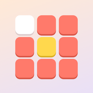
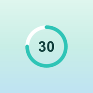
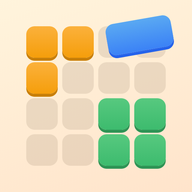

O grze Wykreślanka
Zagraj w Wykreślankę, klasyczną łamigłówkę słowną — kiedy chcesz, gdzie chcesz, całkowicie offline. Przeciągnij palcem po literach i znajdź wszystkie ukryte słowa!
Jak grać
Każda plansza powstaje od nowa: siatka pełna liter z ukrytymi w niej słowami z jednego tematu. Przeciągnij palcem po literach, aby zaznaczyć słowo; znalezione słowa zostają podświetlone. Poziom kończy się, gdy znajdziesz je wszystkie.
Cztery poziomy trudności
- Łatwy: 8×8, słowa w poziomie i w pionie
- Normalny: 10×10, także po skosie
- Trudny: 14×14, także wspak
- Ekspert: 18×18, w każdym kierunku — dla prawdziwych detektywów słów
Tryb przygody
Przejdź setki numerowanych poziomów, które stopniowo stają się trudniejsze. Odblokowuj je jeden po drugim, zdobywaj medal na każdym i odbieraj nagrody za kolejne kamienie milowe.
Tematy
Zwierzęta, jedzenie, sport, samochody, kraje, filmy, muzyka, piwo, kwiaty, gry, zawody, ryby i podróże. Każdy poziom jest inny.
Codzienna łamigłówka
Jedna wyjątkowa plansza dziennie, taka sama dla wszystkich. Zdobądź medal od 1 do 5 gwiazdek i buduj serię: 3, 7, 30, a nawet 100 dni z rzędu!
Monety i motywy
Zdobywaj monety za każdy ukończony poziom i wydawaj je na podpowiedzi albo nowy wygląd: Las, Kosmos, Neon, Drewno, Marmur, Święta i Halloween. Tylko wygląd — żadnego pay-to-win.
A ponadto
- Podpowiedzi za monety
- 23 osiągnięcia, od pierwszego poziomu po serię stu dni
- Szczegółowe statystyki: najlepszy czas, idealne poziomy i więcej
- Tryb zen: ukryj stoper i graj we własnym tempie
- Dźwięk i wibracje (można wyłączyć w ustawieniach)
- Dostępna po angielsku, niderlandzku, hiszpańsku, niemiecku, francusku, portugalsku, włosku, turecku, słowacku, katalońsku i chorwacku — język wybiera też listy słów
Za darmo. Aplikacja wyświetla reklamy, które możesz usunąć jednym opcjonalnym zakupem; konto nie jest potrzebne.
Najczęściej zadawane pytania
Czy Wykreślanka jest za darmo?
Tak. Wykreślanka pobierzesz i zagrasz za darmo. Aplikacja wyświetla reklamy, które możesz usunąć jednym opcjonalnym zakupem w aplikacji.
Czy Wykreślanka działa offline?
Tak. Wykreślanka działa bez połączenia z internetem, więc zagrasz w samolocie, w pociągu czy wszędzie tam, gdzie nie ma Wi-Fi.
Czy do gry w Wykreślanka potrzebne jest konto?
Nie. Bez rejestracji i logowania: otwórz aplikację i graj. Twoje gry i ustawienia zostają na Twoim urządzeniu.
Jak grać w Wykreślanka?
Każda plansza powstaje od nowa: siatka pełna liter z ukrytymi w niej słowami z jednego tematu. Przeciągnij palcem po literach, aby zaznaczyć słowo; znalezione słowa zostają podświetlone. Poziom kończy się, gdy znajdziesz je wszystkie.
Czy codziennie jest nowe wyzwanie?
Jedna wyjątkowa plansza dziennie, taka sama dla wszystkich. Zdobądź medal od 1 do 5 gwiazdek i buduj serię: 3, 7, 30, a nawet 100 dni z rzędu!
Gdzie mogę pobrać Wykreślanka?
Wykreślanka jest dostępne na telefony i tablety z Androidem w Google Play. Użyj przycisku na górze tej strony.
Inne gry, które mogą Ci się spodobać

Nonogram
Nonogram za darmo i offline. Klasyczna gra logiczna, nowe wyzwanie codziennie.
Google Play Amazon Appstore
30 Seconds
Gra 30 Seconds offline: opisz 5 słów w 30 sekund. Imprezowa gra ze znajomymi.
Google Play App Store Amazon Appstore
Blokowa układanka offline
Blokowa układanka za darmo. Układaj bloki i wypełnij planszę, wyzwanie co dzień.
Google Play Amazon AppstoreInformacje prawne
Poniżej znajdziesz dokumenty prawne, które dotyczą gry Wykreślanka.
Kontakt
Pytania, opinie lub sprawy dotyczące prywatności? Napisz na joostmuijsenberg.dev@gmail.com.